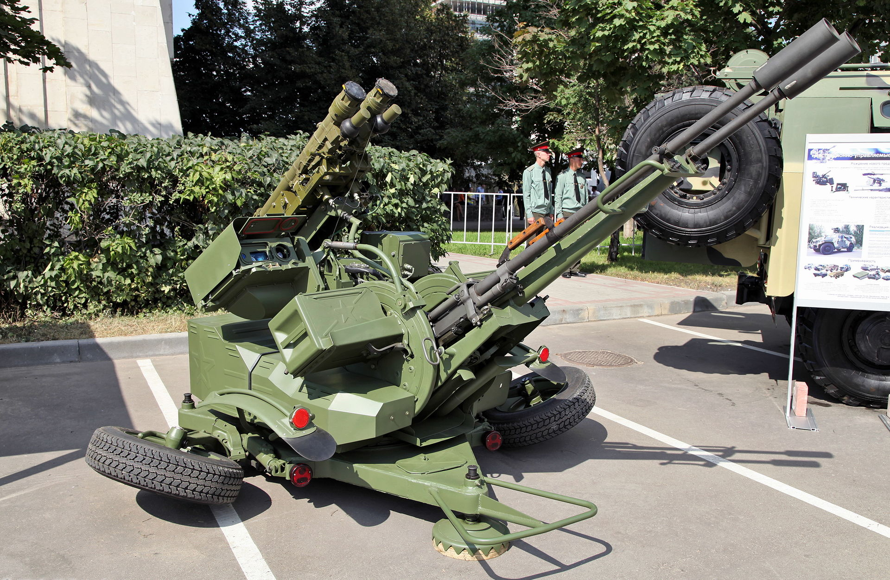
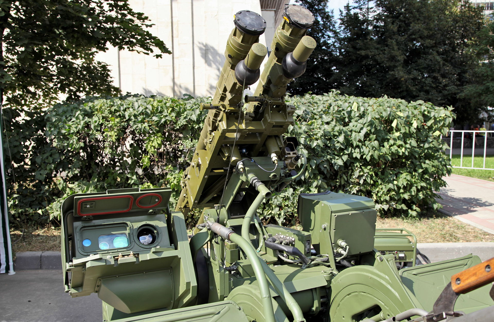
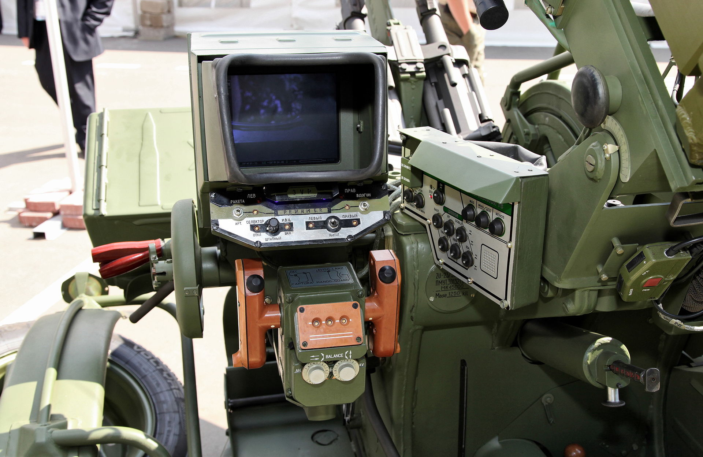
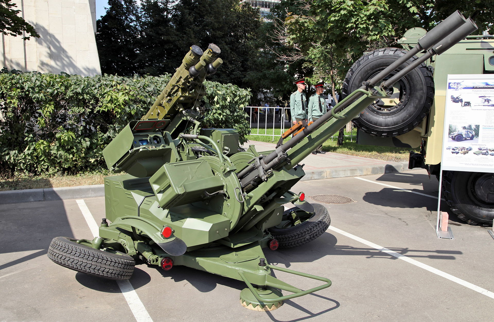
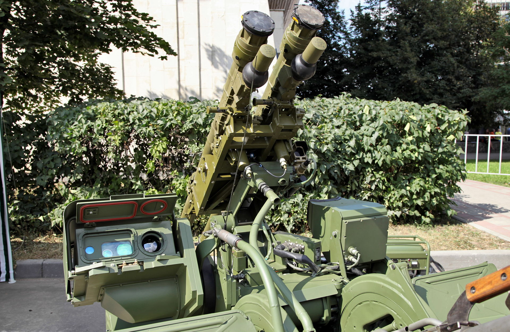
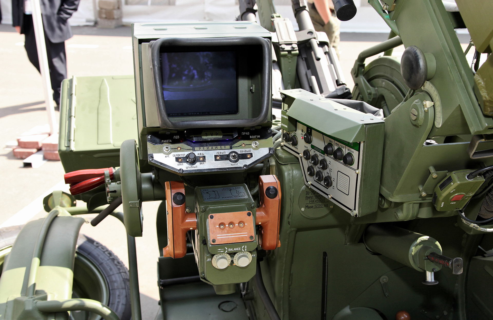

ЗУ-23-2
Назначение
Модификации
ЗУ-23М1 — ЗУ-23-2 c размещённым на ней комплектом «Стрелец», который обеспечивает применение двух отечественных ПЗРК типа «Игла».
ЗУ-23М — корабельный вариант исполнения установки
«Самум» (Сверхмобильная артиллерийская многоцелевая установка модернизированная) — мобильная артиллерийская установка, представленная Подольским электромеханическим заводом
ZUR-23-2S «JOD» — польский вариант модернизации.
ZUR-23-2M «Wróbel» — польский вариант модернизации для установки на корабли.
ZUR-23-2MR «Wróbel II» — польский вариант модернизации для установки на корабли, который обеспечивает применение двух ПЗРК типа «Стрела-2».
использовался на лёгких торпедных катерах KTS boote (нем. kleiner torpedoschnellboote) проекта 131.400 (код НАТО Libelle) ННФ ГДР.
Боеприпасы
В боекомплект российских ЗУ-23-2 и ЗСУ-23-4 «Шилка» входят 23-мм патроны со снарядами только двух типов — БЗТ и ОФЗТ (ОФЗ). Бронебойно-зажигательно-трассирующий снаряд БЗТ цельнокорпусной с полусферической головной частью и стальным баллистическим наконечником, массой 190 г, в донной части содержат вещество для трассирования и в головной — зажигательный состав. Осколочно-фугасные снаряды ОФЗТ массой 188,5 г укомплектованы головным взрывателем В19УК (ранее — МГ-25) с самоликвидатором и максимальным временем срабатывания 11 сек. Метательный заряд у обоих снарядов одинаковый — 77 г пороха марки 5/7 ЦФЛ. Масса патрона 450 г. Баллистические данные обоих снарядов одинаковы — начальная скорость 980 м/с, табличный потолок 1500 м, дальность табличная 2000 м.
В настоящее время ОФЗТ снаряды практически не используются из-за сравнительно низкой эффективности. Повсеместно применяется следующая схема снаряжения ленты: 4 ОФЗ — 1 БЗТ. Капризный взрыватель МГ-25 у снаряда ОФЗ заменён на всепогодный В-19УК, который, при той же чувствительности срабатывания по твёрдым преградам (плотный картон, дерево, дюралюминий, сталь и т. п.), не детонирует при столкновении с каплями дождя и имеет лучшую влагозащищённость.
Снаряд 3УОФ1 заполнен 18,5 г ВВ марки А-IX-2.
Ещё до распада СССР, рядом стран осуществлена разработка и промышленный выпуск собственных усовершенствованных боеприпасов для ЗУ-23-2, в первую очередь, боеприпасов бронебойного действия. Известны 23-мм патроны с бронебойным подкалиберным снарядом (БПС), сердечник твёрдосплавный, фирм Sako (Финляндия) и Denel (ЮАР). Фирмы Oerlikon (Швейцария) и ZM Mesko (Польша) освоили выпуск БПС с отделяемым поддоном и тяжёлосплавным (вольфрамовым) сердечником типов APDS[23], FAPDS-T и APFSDS. Судя по характеристикам снарядов и типам используемых при испытаниях бронепреград, польские боеприпасы APDS и APFSDS предназначены для поражения в лобовой проекции российской БМП-3 и её модификаций с усиленной защитой.
Тактико-технические характеристики
- Калибр, мм: 23
- Зона обстрела
- - по дальности: 2500
- - по высоте: 2000
- Макс скорость цели, м/с: 300
- Скорострельность, выстрелов в минуту: 2000
- Время перевода установки в боевое положение из походного, сек: 30
- Расчет, чел: 6
 





{kind=link}
{kind=link}
{kind=link}